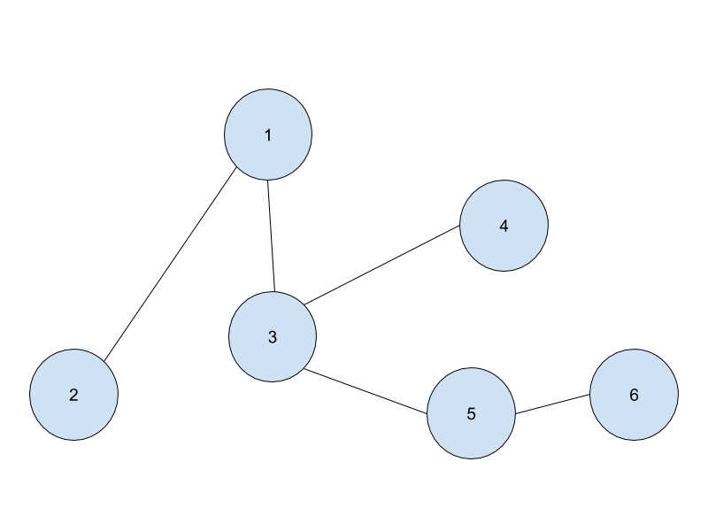

N個の頂点がN-1本の無向辺によって繋がれたグラフが与えられる。 各頂点について、その頂点からスタートしてすべての頂点を訪れるための最短のステップ数を出力して下さい。
ただし、ある頂点から辺で繋がれた別の頂点に移動することを1ステップとする。
入力は以下の形式で与えられる。
N u1 v1 . . . uN-1 vN-1
1行目に、1つの整数Nが与えられる。 続くN-1行のうちi行目には2つの整数ui, viが空白区切りで与えられる。
入力は以下の制約を満たす。
頂点1から頂点Nについてi行目に頂点iからスタートして全ての頂点を訪れるための最短のステップ数を出力せよ。
2 1 2
1 1
6 1 2 1 3 3 4 3 5 5 6
7 6 8 7 7 6

Sample Input2の図